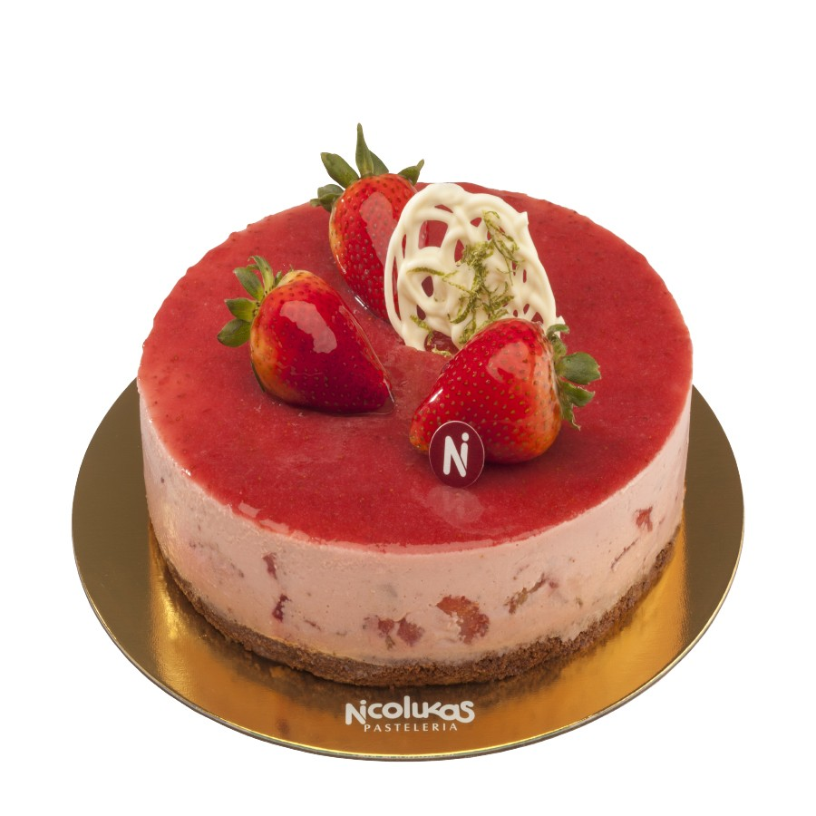
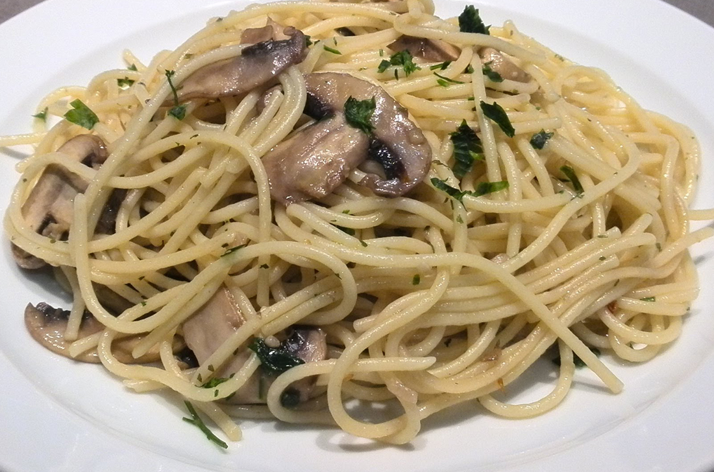
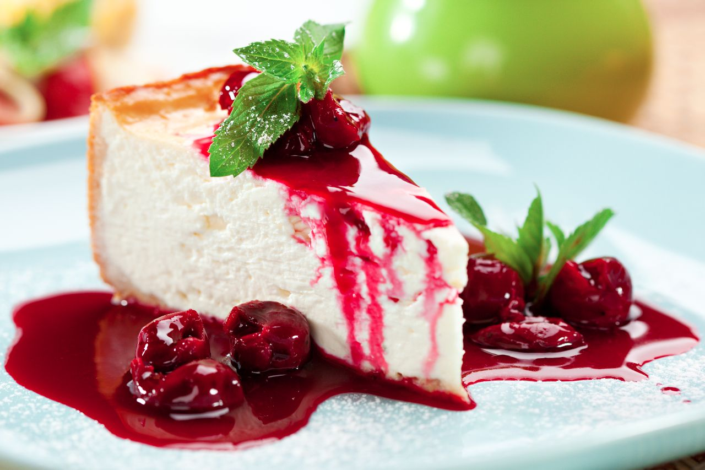
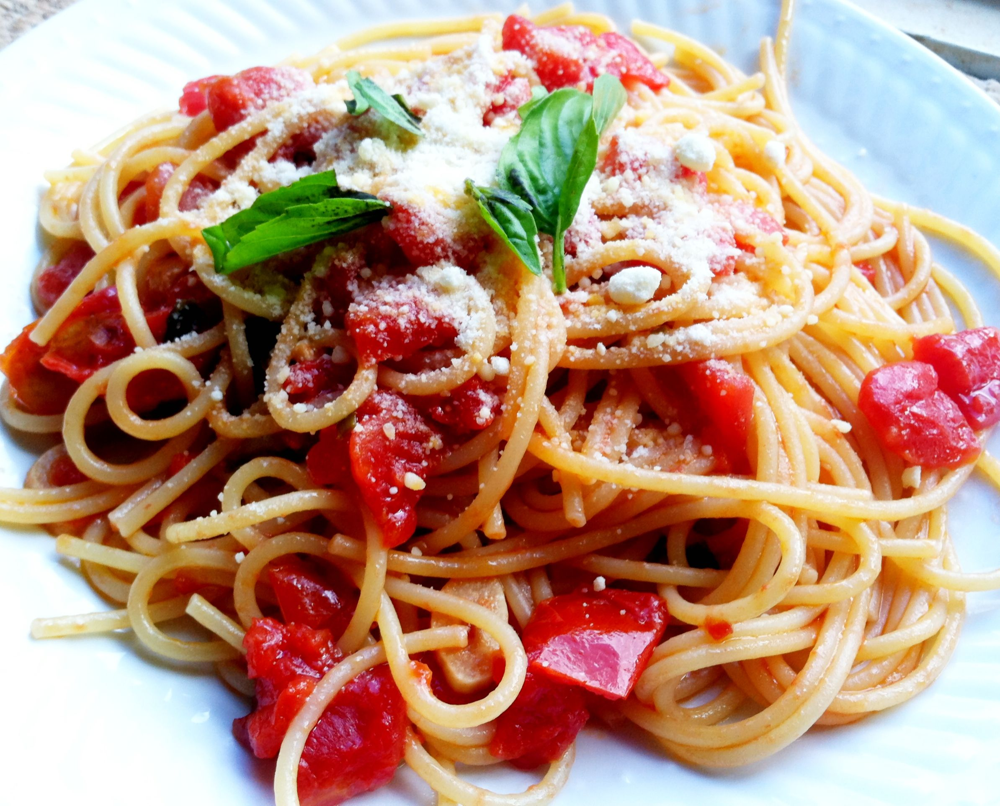

Las Comidas de Pepito
Porque lo Más Sabroso entra por los Ojos...
Favoritos





Historial
-
 Pepito PerezHace 25 Min.Me gusto mucho la página
Pepito PerezHace 25 Min.Me gusto mucho la página -
Perencejo NuñezHace 35 Min.Me gusto mucho la página
-
Fulanito CastroHace 15 Min.Me gusto mucho la página
-
Mengano FlorezHace 5 Min.Me gusto mucho la página
Tacos Mejicanos
Noviembre 25 / 2018

Para el relleno:
2 tazas de carne picada (460 g)
1/2 taza de aceite de oliva (250 ml)
2 tazas de queso cheddar rallado (200 g)
1 tomate cortado en cubitos.
1 cucharada de cebolla verde picada (15 g)
1/2 cabeza de lechuga o repollo rallado.
1 taza de salsa mexicana (200 g)
1/2 taza de aceite de oliva (250 ml)
2 tazas de queso cheddar rallado (200 g)
1 tomate cortado en cubitos.
1 cucharada de cebolla verde picada (15 g)
1/2 cabeza de lechuga o repollo rallado.
1 taza de salsa mexicana (200 g)